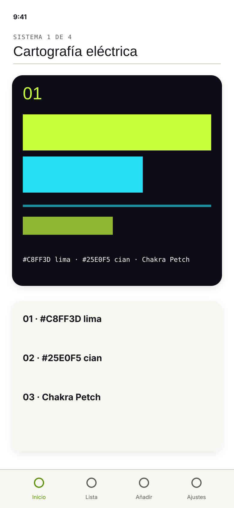
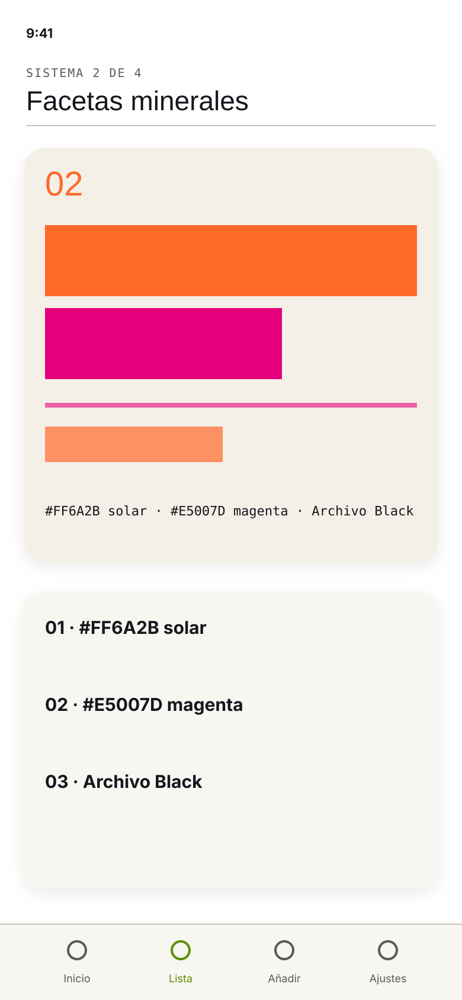
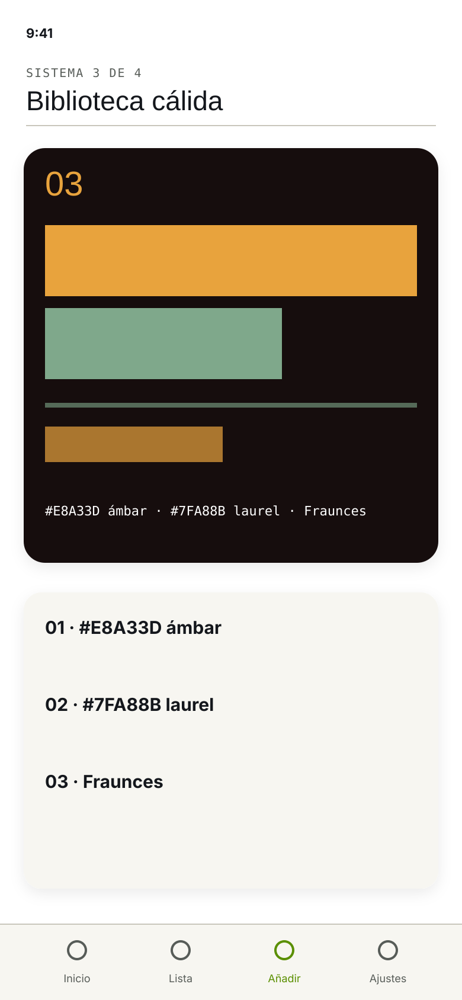
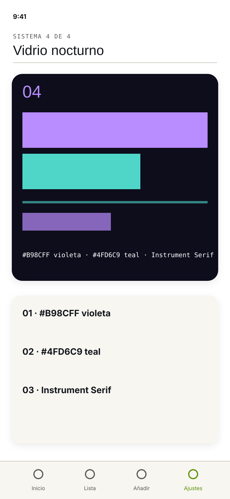

Cuatro mundos
Cartografía eléctrica, facetas minerales, biblioteca editorial y vidrio nocturno.
US-10 · Proyecto realizado · Productividad
Cuatro sistemas de diseño listos para aplicar

Biblioteca de sistemas visuales reutilizables: TOPO-HUD, ISO-SOLAR, ATHENAEUM y AURORA CODEX. Cada estilo trae un prototipo vivo sin build, especificación técnica y tokens W3C DTCG importables. Contraste AA verificado en 28 de 28 pares.
01 · Funcionalidades
Cartografía eléctrica, facetas minerales, biblioteca editorial y vidrio nocturno.
HTML autocontenido que se abre sin servidor, build ni conexión.
JSON en formato W3C listo para importar en tu design system.
28 de 28 pares conformes, AA y AAA, en ambos temas.
Señal GPS, track, mapa animado y verificador de contraste interactivo.
Targets de 48 px, foco visible, reduced-motion y sin scroll horizontal.
02 · La interfaz
Composiciones de retícula que anticipan la estructura real de la aplicación.

01 · TOPO-HUD
02 · ISO-SOLAR
03 · ATHENAEUM
04 · AURORA CODEX03 · Demo en video
Recorrido por las pantallas reales del producto: hoy, plan, hitos y logros.
05 · Tu proyecto
Estado del proyecto: Disponible. Plataforma: Web · JSON DTCG. Construido con HTML autocontenido · Tokens W3C. Este es uno de los diez proyectos ya realizados por Uskein Studio.
Cuéntame tu operación y te propongo un alcance concreto: móvil, web o sistema transaccional.
Tu próximo proyecto